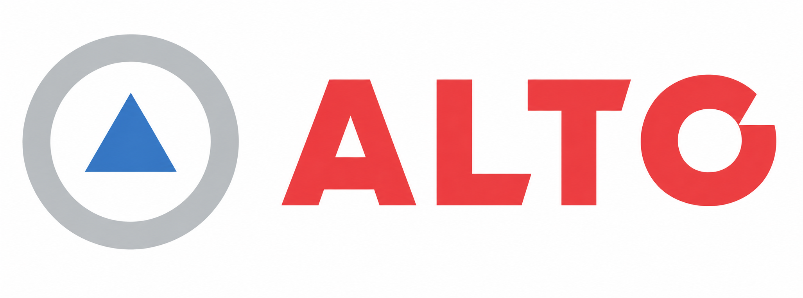

Lider concentra la mayor exposición
Registra 41,421 eventos. Lider - 87 encabeza el ranking FS con 240.6 eventos mensuales y $13.7 millones CLP de severidad mensual robusta.

Priorización de tiendas mediante severidad robusta, diagnóstico de dispersión y tripletas Tienda × Día × Franja.
La señal combina volumen, impacto económico y concentración temporal sin confundir significancia estadística con relevancia operativa.
Registra 41,421 eventos. Lider - 87 encabeza el ranking FS con 240.6 eventos mensuales y $13.7 millones CLP de severidad mensual robusta.
Express - 689 y Acuenta - 454 / 947 cumplen simultáneamente participación, multiplicador, cobertura y corrección BH.
Aunque existen diferencias estadísticas, ninguna combinación reúne una participación mínima de 20% dentro de la tienda.
Ocho patrones cumplen los criterios operativos nominales, pero ninguno mantiene significancia después de BH.
Sólo 317 eventos —0.47%— fueron limitados en P99.5. Esto neutraliza capturas extremas sin eliminar observaciones.
Los cortes corresponden a las medianas internas de cada cuenta. El score FS pondera 50% frecuencia y 50% severidad.
Una confirmación requiere ≥3 eventos, participación ≥20%, multiplicador ≥2, cobertura monetaria ≥50% y BH < 0.05.
El análisis conserva cada evento, documenta exclusiones y aplica pruebas independientes por cuenta.
Hurto, Robo y Descarga; siete meses completos. Central Monitoreo se reasignó a su formato y tienda física.
≥100 eventos, ≥10 tiendas, ≥6 meses y ≥80 montos positivos. Cuatro formatos pasan el control.
Winsorización P99.5 independiente por cuenta. Los montos vacíos permanecen vacíos.
Las cuatro cuentas presentan sobredispersión; se utiliza Frecuencia–Severidad descriptiva robusta.
Frecuencia mensual y severidad mensual robusta, con cortes medianos y ranking relativo 50/50.
Prueba binomial unilateral, comparación con otras tiendas y corrección Benjamini–Hochberg por cuenta.